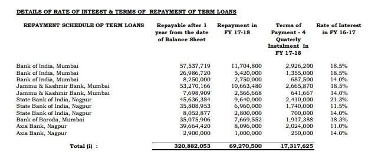

Turnaround companies can go on to become huge multibaggers. Two famous turnaround companies are Symphony and Vipul, both of which were penny stocks, and in losses, once upon a time.
Here is why I consider Malu Papers to be a solid turnaround waste-to-wealth company for the long term:
Another thing — before acting on the information, know that the company’s promoters are picking up shares from the market. This implies that there may be operators at play and that the price may drop a bit before action begins.
Here’s the analysis:
- Let’s start with a negative that can actually be a positive — most of the promoters’ shareholding is pledged with banks. Given that the company has successfully completed its CDR program, it is unlikely that banks will sell shares in case of default (which will not happen because of the huge positive cash flows). In the worst case scenario, the banks will sell the pledged shares to a suitable bidder, which can be good news in the long run, if at all it comes to that.
—- - The company owns 3 manufacturing units, in Nagpur, having a capacity of 13500 TPA of Kraft Paper , 19800 TPA of Newsprint and 49500 MT of Quality Newsprint and Writing Printing Paper. The infrastructure facilities are best in class.
—- - Malu Paper is a waste-to-wealth company. It helps conserve the environment by recycling old corrugated cartons into Machine Glazed (MG) Kraft Paper, and waste paper into newsprint. Waste to wealth companies will end up making big money going forward as our population keeps increasing and waste goes on multiplying.
—- - Though growing digitization is reducing the consumption of paper in urban areas, the growing rural literacy will more than offset the demand shortfall — at least in India. That way, Malu Papers is covered from a potential fall in paper demand. Moreover, the company makes packaging paper which is hugely in demand because of the ecommerce boom. Most importantly, the management is shifting focus to packaging paper than newsprint, which is fantastic news. The company also has optimised its production processes and will surely witness better realisations in the future.
—- - GST will help by closing down unorganized players and enabling existing players increase demand and capacities going forward. The first quarter of 2017 has not seen encouraging results mainly because the introduction of GST may have hit demand in the short run. The picture is now clearing up and Malu Paper, being an organized player, will benefit going forward.
—- - The company supplies newsprint to many prominent Hindi and Marathi news papers along with Hindustan Times and The Indian Express. Kraft paper is supplied to top clients such as Haldirams, Indo Rama, Hindustan Lever, Marico, etc.
—- - Promoters hold about 68.48% of the equity (17 crores) and one promoter has been picking up small quantities lately.
—- - For the year ended 31-3-17, the company has repaid about 8 crores of its total debt, which now stands at 92 crores (56 cr secured and 36 cr unsecured). Unsecured loans have been obtained from associate companies.
—- - The company’s sales for 31-3-17 were 253 crores and sundry debtors were only 23 crores, implying a 1-month credit cycle, which is a very healthy sign.
—- - The company generated 21.70 crores cash from its operations and used 8 cores to repay loans and 13 crores towards interest. Actually, interest is the only thorn in the flesh for this company.
—- - The company’s reserves turned black from red during 2016-17. For the year, 2016-17, the company has 6. crore reserves against a negative 2.2 crore reserves for 2015-16.
—- - Now, here’s one of the things that makes me feel very bullish about Malu Papers — The company pays about 16% interest to banks. Given the declining rates of interest, it will not be tough for the company to get banks to substantially reduce the applicable rates. Of course, this is my opinion and the logic is that the prime lending rates of banks are now hovering below 10%. I also get this feeling that the company may have renegotiated the interest rates, which could be one of the reasons why the promoter is buying shares.

—- - The debt levels of the company will keep reducing as per the terms of the CDR scheme and the company will become debt free in 5-6 years.
—-Well, that’s about it. Malu Papers is a perfect example of a turnaround company that is about to do very well in the future (which is why it is available at 33 bucks, FV 10). It owns solid infrastructure, great clients, bulky cash flow and a management that is continuously optimizing product mix to ensure higher realizations and shareholder return. Lowering of the interest rate, and an ecommerce/FMCG/Pharma boom will add substantially to the profits.Apart from the above, the biggest story is waste-to-wealth. Such companies may even be rewarded by the government (in the form of tax incentives) going forward.
Investors with a long term horizon of 2 years can research some more and consider investing in this hidden gem.
How does it compare to Yash Papers?
Yash fundamentals are stronger, but Malu can expand faster and is more versatile. Yash is 100% recycling, while Malu is about 85-90% waste to wealth.
Sir What is difference between recycling and waste to wealth
Same thing in this case. I use interchangeably so search engines can pick up keywords.
Good write up.
The pledged percentage has been above 70% for quite a few quarters now. Shouldn’t that be a concern?? How do you look into that aspect?
It’s a CDR case. Has no option but to pledge its stock. If it defaults, the banks will take it over and sell it. I spoke to the CS recently and he said that the company is 100% spot on on fulfilling the CDR terms.
Well that clears the doubt. Thanks sir for the great work.